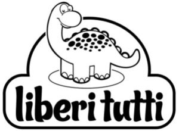

Trade Mark Journal No.2025/011 14 March 2025
WO0000001842460 (18,20,24,25,27)
Office of origin: Italy
Date of International Registration:8 October 2024
Date of designation in the UK:
8 October 2024

The trademark consists of an imprint depicting an imaginative figure formed by an open irregular line with rounded corners inside which is a stylized figure of a dinosaur which protrudes partially from the upper part of said line, underneath said dinosaur is a stylized oval and below this are the wordings LIBERI TUTTI in fancy characters.
International priority date claimed: 29 May 2024
(Italy)
(302024000087250)
- Class 18
- Daypacks; school backpacks; suitcases; suitcases with wheels; leather and imitations of leather; animal skins and hides; luggage and carrying bags; umbrellas and parasols; walking sticks; whips, harness and saddlery; collars, leashes and clothing for animals.
- Class 20
- Cushions; anti-roll cushions for babies; head support cushions for babies; sleeping pads for use by children; furniture, mirrors, picture frames; containers, not of metal, for storage or transport; unworked or semi-worked bone, horn, whalebone or mother-of-pearl; shells; meerschaum; yellow amber.
- Class 24
- Bed blankets; bed blankets made of cotton; children's blankets; textiles and substitutes for textiles; household linen; curtains of textile or plastic.
- Class 25
- Short-sleeve tee-shirts; long-sleeve tee-shirts; printed tee-shirts; clothing for infants; footwear for children; boots for children; jeans; blousons; maillots [hosiery]; knitted baby shoes; canvas shoes; infants' shoes; thongs [footwear]; flip-flops [footwear]; sandals; baby sandals; tank tops; trousers; trousers for babies; fleece shorts; hooded sweatshirts; sweatshirts; sports jackets; down jackets; body warmers; down suits; underwear; underwear for babies; underpants; babies' pants [underwear]; turtleneck sweaters; mock turtleneck sweaters; babies' bibs of plastic; cloth bibs for children; bath robes; ponchos; snap crotch shirts for infants and toddlers; rubber boots; clothing, footwear, headwear.
- Class 27
- Non-slip mats; carpets, rugs, mats and matting, linoleum and other materials for covering existing floors; wall hangings, not of textile.
EUROSPIN ITALIA S.P.A.
Representative: Dr. Modiano & Associati SpA, Via Meravigli 16, I-20123 Milano, ITALY